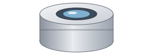
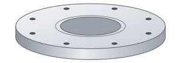
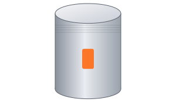
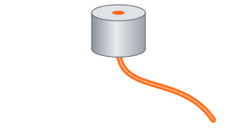

One sensor.
Inside the process.
The OGURION sensor is mounted directly on the process chamber via a standard vacuum flange. It detects particles in real time – during deposition, pump-down and venting.
Swiss BFH spin-off · In-situ particle sensing
OGURION develops fiber-optic particle sensors that work directly inside harsh industrial environments – starting with PVD, ALD and CVD vacuum coating systems.
// Mission
In vacuum coating processes, a single particle can ruin an optical layer, a semiconductor wafer or a medical implant. Today, contamination is mostly discovered after the fact – during inspection, when the damage is done. Chambers are cleaned on fixed schedules, whether they need it or not.
Our mission is to make particles visible where they originate: inside the process chamber, during the process. With continuous in-situ data, manufacturers can move from fixed preventive maintenance to predictive, data-driven particle management – reducing scrap, downtime and cost.
// Product · Exploded view




The OGURION sensor is mounted directly on the process chamber via a standard vacuum flange. It detects particles in real time – during deposition, pump-down and venting.
A robust sapphire window protects the optics against coating, heat and aggressive process gases. The optical head defines the measurement volume in the chamber.
Standard flange interfaces allow retrofitting into existing PVD, ALD and CVD systems without changing the chamber design.
Light is guided through optical fibers – no electronics in the chamber. The sensor is immune to plasma, RF fields and high temperatures.
The evaluation unit outside the chamber turns optical signals into particle counts and trends – the basis for predictive cleaning and maintenance.
// Solutions
Monitor particle generation from targets, shields and fixtures during sputtering and evaporation – and clean only when it is really needed.
Detect flaking and powder formation early in cyclic precursor processes where layers are only a few atoms thick.
Withstands reactive gases and high temperatures to track gas-phase nucleation and wall deposits in real time.
Etching, vacuum handling, high-temperature or high-voltage processes – wherever conventional particle counters cannot go.
// Current projects
Together with BFH and industrial partners, the sensor is validated in production-scale coating systems and prepared for series production.
Coaching support for building the business model, market entry and first customer installations in the thin-film industry.
// Team
Co-Founder & CEO
Co-Founder & CTO
Optical Engineering
Scientific Advisor, BFH
// Contact
Interested in a pilot installation, a demo or a research collaboration? Send us a message – we will get back to you shortly.